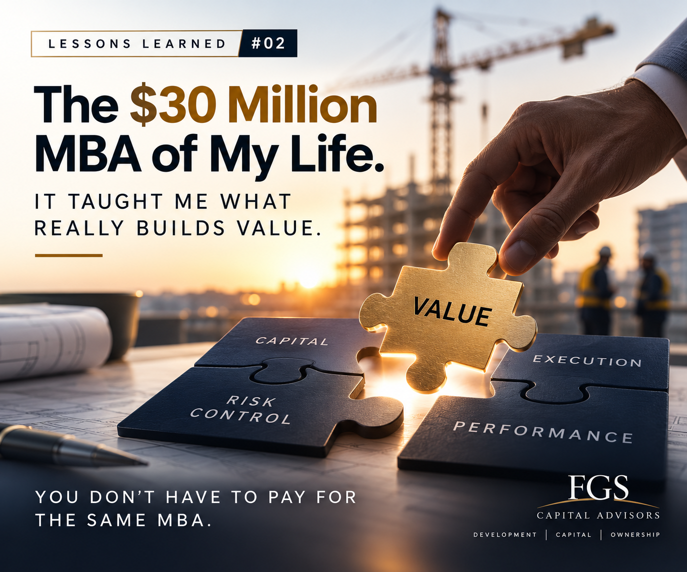

The $30 Million MBA of My Life.

Early in my career, I had a conversation with a former global President of McDonald’s.
After hearing my investment thesis, he told me something I did not particularly enjoy hearing:
I was young. I did not pay much attention at the time. But I never forgot it.
So I decided to learn finance — not as an accountant, but as an owner, developer and executive. I studied the P&Ls and balance sheets of public real estate and construction companies in Brazil and abroad.
Over time I noticed a pattern: strong companies tend to share similar financial disciplines. They control costs before celebrating revenue. They understand the right SG&A structure for their gross margin. They watch debt, leverage and liquidity. They know how long the company can survive if sales slow down.
Since then, whenever I analyze a development, construction company or troubled project, I start with the numbers: P&L, balance sheet, debt, cash, margins and commitments. Only then do I diagnose the specific problem.
It is similar to medicine: examine the patient before prescribing the treatment.
It took me more than 30 years and exposure to more than US$30 million in real decisions, investments, successes and expensive lessons to build this perspective. It was the best MBA of my life — not because I lost US$30 million, but because I invested, built, made money, made mistakes, corrected course and learned with my own capital and time at stake.
Those lessons helped shape the four areas we focus on today:
- Development & Capital Structuring
- Independent Engineer & Owner’s Representation
- Development Advisory & Project Controls
- Sustainability & Performance
You do not need to spend 30 years — or US$30 million — learning the same lessons. I already did.
If you are a developer, builder, investor, lender or family office with a project in Florida and would like an independent perspective on capital structure, project controls, owner-side oversight or execution, contact us.
Start a conversation →